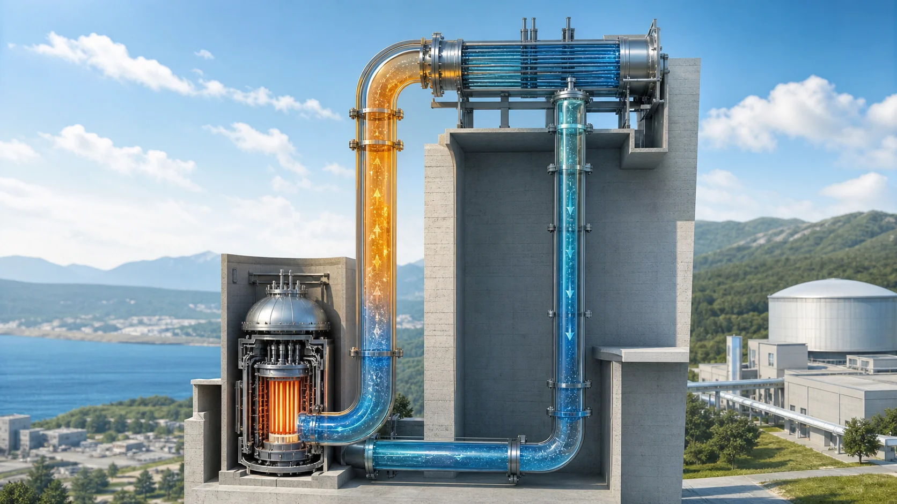
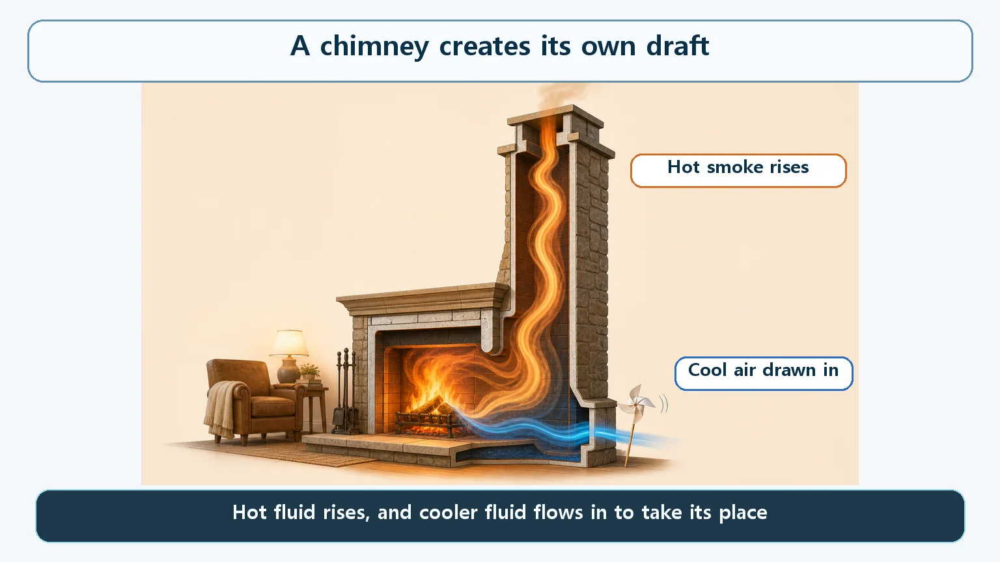
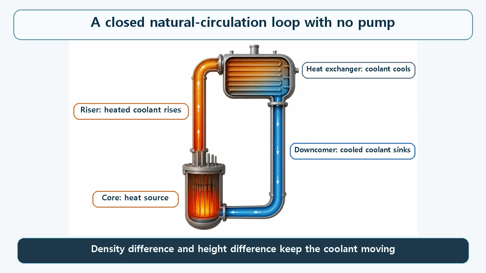

Heat Transfer & Thermal Hydraulics · 142
The Smoke That Climbs on Its Own — How Natural Circulation Cools a Reactor Without Pumps
A fireplace chimney needs no fan. Give the smoke a return path and you have the closed loop that lets reactors cool themselves without pumps.

Natural circulation is a fluid flowing on its own around a closed loop, driven only by a temperature (density) difference and a height difference, with no pump. The chimney over a fireplace is the everyday version. In a reactor, coolant heated in the core rises to a heat exchanger, cools and sinks back, which lets some safety systems, and even some reactor designs, keep cooling without pumps or electric power.
Who pushes the smoke up?
Have you ever lit a fire in a fireplace? Once it gets going, something neat happens. The smoke doesn't spill into the room; it gets drawn up into the chimney and slips outside, even though there isn't a single fan or blower anywhere. Hold your hand near the air inlet at the bottom and you can even feel cool air creeping in.
Who is pushing that smoke up? And how does such an ordinary effect turn into a way to cool a nuclear reactor with no pumps at all?
Why hot air rises by itself
The answer is simple. Air warmed by the fire expands slightly, so its density (the mass packed into a given volume) drops. The warm air is now "lighter" than the cool air around it. Buoyancy lifts it, and heavier, cooler air from below is drawn in to fill the space. When a fluid moves up and down like this and carries heat with it, that is convection; when the motion happens on its own, driven only by density differences, it is natural convection.
A chimney confines this natural convection to one long, narrow passage, turning it into a much stronger, steadier flow: the warm air goes straight up instead of spreading sideways, and the inflow of cool air at the bottom becomes just as clear. As long as the fire burns, that is, as long as the temperature difference lasts, the flow continues with no machinery at all. A fluid flowing on its own around a closed path, driven only by a temperature (density) difference and a height difference, is called natural circulation.

Add a return path — the reactor natural-circulation loop
Now suppose the smoke leaving the chimney, instead of vanishing into the sky, were cooled somewhere and piped back to the bottom of the fireplace. It would keep repeating "heat up and rise, cool down and sink" around a single closed loop. That is exactly what a reactor's natural-circulation cooling system does.
Coolant heated in the reactor core (where the nuclear fuel sits) becomes lighter, just like the chimney smoke, and rises through the upper piping (the riser) toward a heat exchanger; in a pressurized water reactor, that is the steam generator. There it gives up its heat, cools, becomes heavier again, and returns to the core through the lower piping (the downcomer). As long as there is enough height difference between the core and the heat exchanger, this up-and-down motion keeps going without a single pump. A chimney doesn't need a fan, and neither does this loop. One difference: a chimney is open, with air leaving to the atmosphere and fresh air coming in, while the reactor loop is closed, with the same coolant circling inside the pipes.
How hard the flow is pushed depends on two things: the temperature difference between the hot and cold sides (and the density difference it creates), and the height difference between the riser and the downcomer. In simple form:
Driving force of natural circulation ∝ (density of cooled coolant − density of heated coolant) × height difference
The bigger the temperature difference, and the greater the height between the core and the heat exchanger, the stronger the circulation. It is the same reason a short chimney draws weakly and a tall one draws well. Equipment that relies heavily on natural circulation is therefore designed from the start with plenty of vertical distance between the heat source and the heat exchanger. This is a picture of the trend, not a design formula: the actual flow rate is set by the balance between this driving force and the friction in the piping.

Why having no pump can be a strength
"Wouldn't a pump be safer?" you might ask. In fact, most large commercial reactors in normal operation do carry core heat away with forced circulation driven by reactor coolant pumps (RCPs), because the flow can be made as strong as needed.
But a pump is a machine, and it needs electricity to run. If the power goes out or the pump itself fails, a system that relies only on forced circulation can lose its flow. Natural circulation needs neither a pump nor the power to drive one. As long as the temperature difference and the height difference are there, it simply keeps flowing, like the fireplace chimney.
So reactor designers deliberately use this "flows by itself" property as a key safety tool. Even after a reactor is shut down, heat keeps being produced for a while by the radioactive decay of fission products (decay heat, a separate topic). Some residual-heat-removal and emergency-cooling systems are designed to keep carrying that heat away by natural circulation alone, without pumps or AC power. Certain advanced pressurized water reactors, often called passive designs, are built to cool the core in an accident for a period of time using only systems based on natural circulation, without pumps or external power.
Going one step further, some small modular reactor (SMR) designs have no reactor coolant pumps at all. Coolant heated in the core rises naturally, cools as it passes through the steam generator, sinks, and returns to the core, and that natural circulation alone carries normal full-power operation. Having no pump is not a flaw here; it removes the worry about pump failure from the design altogether.
Neighbors that are easy to mix up
Natural circulation vs. natural convection. The physics is the same. Here, "natural convection" means circulation inside one open space, like water in a pot, while "natural circulation" means the larger-scale flow around a closed circuit of pipes and components. In practice the two terms are often used interchangeably.
Natural circulation vs. convection itself. Convection is the way a fluid carries heat; natural circulation is the way the flow is driven, without pumps, by density and height differences. Natural circulation is ultimately a form of convection.
Two common misconceptions
"Natural circulation is a perpetual-motion machine." No. It creates no new energy. The flow lasts only while a heat source such as the core keeps heating the fluid; if the heat source cools or the height and density differences disappear, the circulation weakens or stops.
"Without a pump, the reactor must be dangerous." If anything, the reverse. Designs that rely on natural circulation are built so that cooling continues even when pumps and power are lost; they are often a safety choice made precisely to eliminate that weakness.
Key takeaways
- Natural circulation is a fluid flowing on its own around a closed path, driven only by a temperature (density) difference and a height difference, with no pump or other external power.
- Smoke rising up a fireplace chimney while cool air is drawn in is the easiest picture of it (the chimney effect).
- The flow gets stronger with a larger temperature (density) difference and a greater height between the heat source and the heat exchanger.
- In a reactor, coolant heated in the core rises to the heat exchanger, and cooled coolant sinks back to the core, forming a closed loop.
- Because it needs no pump or power, natural circulation is widely used as a passive safety means that can be expected to work even in a blackout, and some reactor designs run normal operation on it alone.